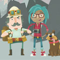

Professor Bairstone and Dr Day, along with Ernest the dog, were on an
expedition in Siberia when they discovered the Monk Diamond. It had
been hidden in a remote mountain cave. The Bond Brothers attempted to
sabotage the expedition and reclaim the diamond but were unsuccessful.
The team returned to Moscow with the diamond and a special exhibition is
being held at the House of Volkov to celebrate their discovery.
